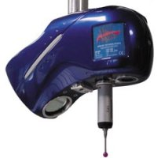

|
 Laser
ile optik 3D tarama cihazlarý konusunda dünyada teknoloji
liderlerinden olan KREON Technologies ile Apeks CAD/CAM
arasýnda distribütörlük anlþamasý imzalanmýþtýr; Laser
ile optik 3D tarama cihazlarý konusunda dünyada teknoloji
liderlerinden olan KREON Technologies ile Apeks CAD/CAM
arasýnda distribütörlük anlþamasý imzalanmýþtýr;
KREON
Fast Inspection Solution
KREON'un
KREON Fast Inspection Solution endüstriye hýzlý kaliteli maliyet
konusunda uygun çözümler sunmaktadýr. Özellikle otomotiv sanayinin
aðýr büyük parçalarýnda hýzlý kolay çözümler sunmaktadýr.
KREON Fast Inspection Solution yeni teknolojinin adresi durumuna
gelmiþtir.
KREON
ZEPHYR Scanner hýzlý veri toplama ve geniþ veri yakalama
opsiyonu ile sadece problarla görülebilen küçük delik operasyonlarýný
bile kolaylýkla tanýmlayabilmektedir. KREON'un dokunmasýz
ölçme teknolojisi özellikle hassas parçalarýn zarar görmeden
hýzlý ve doðrulukla ölçülmesini saðlar. KREON saðladýðý yüksek
doðruluk seviyesi sayesinde özellikle montaj ve kaynak iþlemleri
için son derece kaliteli çözümler sunar.
Ýlgili
software IMAGEWARE INSPECTION ile çýkan nokta bulutlarý CAD
dosyalarý haline getirebilir. Analiz sonuçlarý da PDF, HTML,
WORD, EXCEL ve CSV formatlarýyla alýnabilir. KREON - IMAGEWARE
uyumluluðu size komple bir çözüm sunar. (www.ugs.com/products/nx/imageware)
KREON
hýzlý tersine mühendislik çözümleri
Tersine
mühendislik genelde zaman kazandýran mühendislik uygulamasý
olarak adlandýrýlýr. KREON Tersine Mühendislik Çözümleri mevcut
prosesleri geliþtirir, güçlendirir. Bu çözüm, günümüz tersine
mühendislik anlayýþý, yazýlým ve hýzlý prototip uygulamalarýyla
uyumludur. KREON Zephyr dokunmasýz ölçme sisteminde ancak
problarla tanýmlanabilecek þekilleri bile tarayarak kaliteli
ve hýzlý çözümler sunar.
Ýlgili
yazýlým olan Geomaic studio dünyanýn bir numaralý tersine
mühendislik yazýlýmýdýr (www.geomagic.com).
Kalibrasyon ve tarama direkt IMAGEWARE SURFACING'e aktarýlabilir
. KREON için yeni yazýlýmlar almanýz gerekmez. KREON ZEPHYR
gerçek zamanlý görüntü saðlar ayrýca entegre probuyla da yüksek
kaliteli çözüm sunar. Kompleks parçalara maliyet ve zaman
kazanýmlarýyla kolaylýkla uygulanabilir.
KREON
bir parçayý deðiþik yönlerden tarar farklý nokta bulutlarý
oluþturur ve ortak bir koordinata göre düzenler. Bu çözümle
kolaylýkla yakalanan datalarla parça yeniden modellenir veya
hýzlý prototipleme (rapid prototyping) için kullanýlýr. KREON
Hýzlý Tersine Mühendislik Çözümleriyle fiziksel ve dijital
dünya arasýndaki fark kapatýlýr.
Bazý
referanslar
- General
electric
- Volkswagen
- Renault
- Rover
- Ford
- GM
- Renault
Trucks
- Bombardier
- Harley
Davidson
- Philips
- Motorola
Daha
fazla bilgi için: www.apekscadcam.com/kreon.html
KREON
Technologies hakkýnda:
1991
yýlýnda kuruldu. Hýzlý "3D laser scanner"larý üzerine
hizmet veriyor. Yýllarýn verdiði tecrübeyle ilk yapýlan laser
teknolojisi yerini yeni teknolojilere býrakýyor. Bugün KREON
firmasý kalite kontrol, tersine mühendislik, yüzey inceleme
ve rapid prototyping alanlarýnda otomotiv, havacýlýk, medikal
ve diþçilik sektörlerine hizmet vermektedir.
KREON
dünya üzerinde partnerlarý, uzmanlarý, satýþ ve teknik destek
birimleriyle bilgi birikimini paylaþmaktadýr. KREON'un Limoges
Fransa'daki genel merkezinde hardware ve software araþtýrma
ve geliþtirme imalat satýþ ve teknik destek departmanlarý
bulunmaktadýr: www.kreon.fr
APEKS
CAD/CAM hakkýnda:
Firmamýz
UGS / PLM Solutions firmasýnýn üterim sektörüne sunduðu üst
seviye Bilgisayar Destekli Tasarým Ýmalat ve Mühendislik (CAD/CAM/CAE)
yazýlým çözümlerini kullanýcýlara yerinde ve zamanýnda ulaþtýrmak
amacý ile 2002 yýlýnda Ankara'da kuruldu. Apeks CAD/CAM Unigraphics
Solutions'ýn Ýç Andaolu'daki tek yetkili bayisidir.
APEKS CAD/CAM çalýþmalarýnda; yazýlým, hizmet ve donaným olarak
komple çözüm gerektiren projeler için, anahtar teslimi çözümler
üretmekte ve sunduðu çözümlerle ilgili satýþ, eðitim, servis,
danýþmanlýk, destek, uygulama ve uyarlama hizmetleri vermektedir.
Þirketimiz KREON laser scanning sistemlerinin satýþý ile birlikte
sektörde ihtiyaç duyulan optik 3D tarama hizmetini de müþterilerine
sunmaktadýr.
Ýrtibat:
APEKS
CAD/CAM Bilgisayar Sistemleri
Cevat Dündar Cad. Kavacýklý Ýþ Merkezi 15/31 Ostim / Ankara
Tel:
(312) 385 08 43
Faks:
(312) 385 09 84
apeks@apekscadcam.com
www.apekscadcam.com
|